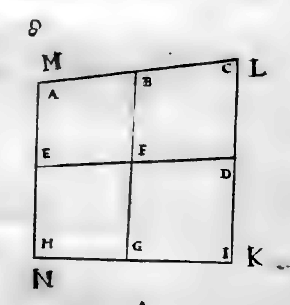

Proposition V: Fifth Element (Planar & Skew Quadrilateral)¶


Proposition V · Problem V · Element V (Tab. 1, Fig. 8)
In a quadrilateral :g:`ACIH`, let straight lines :g:`BG` and :g:`ED` joining points on opposite pairs of sides intersect at :g:`F`. To find the static equilibrium of four weights suspended at the four vertices.
Suspend four weights M at A, L at C, K at I, and N at H so that B balances M and L, D balances L and K, G balances K and N, and E balances N and M. Then grouping opposite sides forces both bimedians BG and ED to pass through the unique four-weight center of gravity F, yielding cyclic product unity:
$$\frac{\overline{AB}}{\overline{BC}} \cdot \frac{\overline{CD}}{\overline{DI}} \cdot \frac{\overline{IG}}{\overline{GH}} \cdot \frac{\overline{HE}}{\overline{EA}} = \frac{L}{M} \cdot \frac{K}{L} \cdot \frac{N}{K} \cdot \frac{M}{N} = 1.$$
Corollary (3D Skew Quadrilateral): Ceva remarks with startling geometric insight that the entire theorem remains true even if the quadrilateral does not lie in a single plane (quadrilaterum non planum, “licet quadrilaterum non in eodem plano iaceat”): because both lines BG and ED pass through the unique spatial center of gravity F, they necessarily intersect and therefore span a single plane containing all four edge fulcrums B, D, G, E!
f. 0024 · p. p. 7